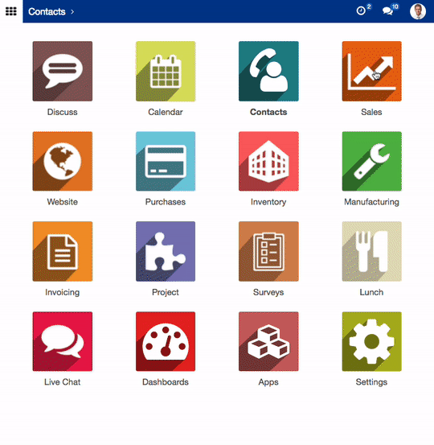

Smart and responsive layout
Seamless experience on multi devices

Making every page or screen self-evident is like having good lighting in a store.
Responsive web layout helps users enjoy a seamless experience and always ready for work from anywhere with any devices.
Things obvious and easy erode our confidence in the site and the organization behind it.
Mobile friendly